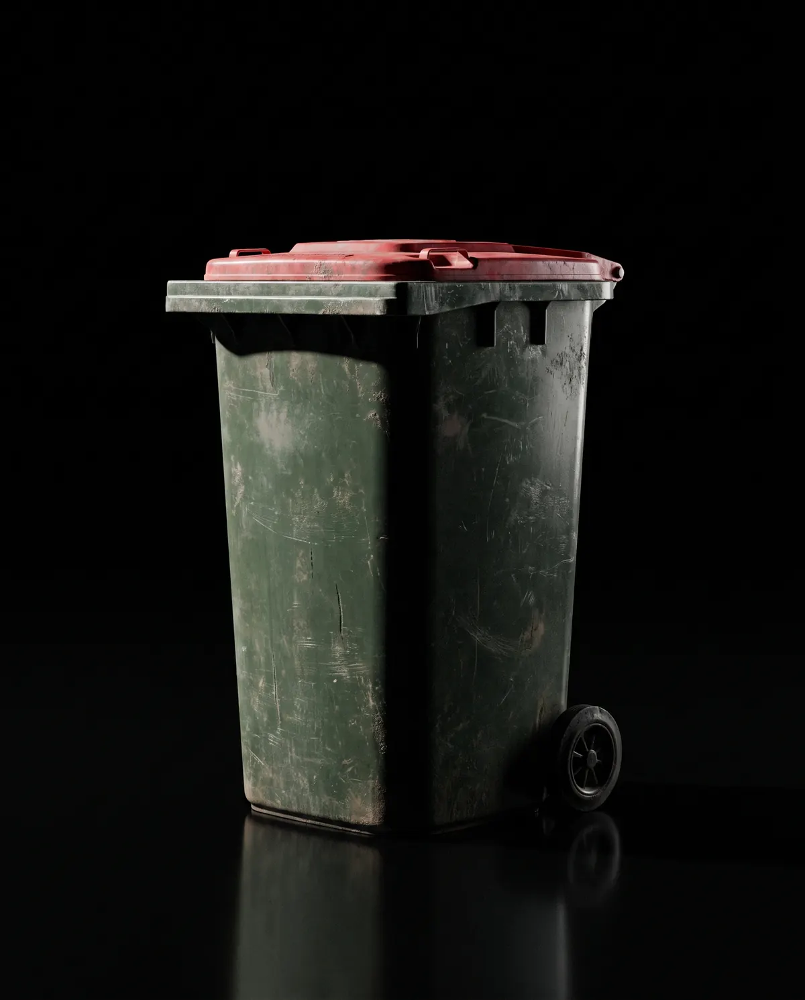
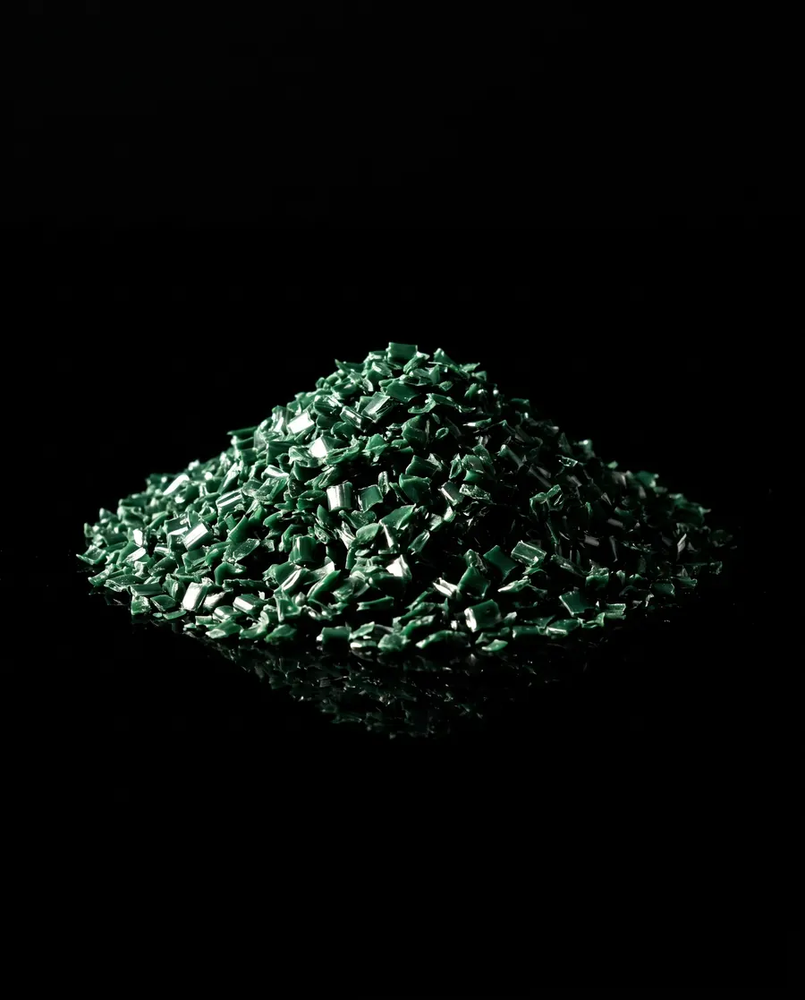
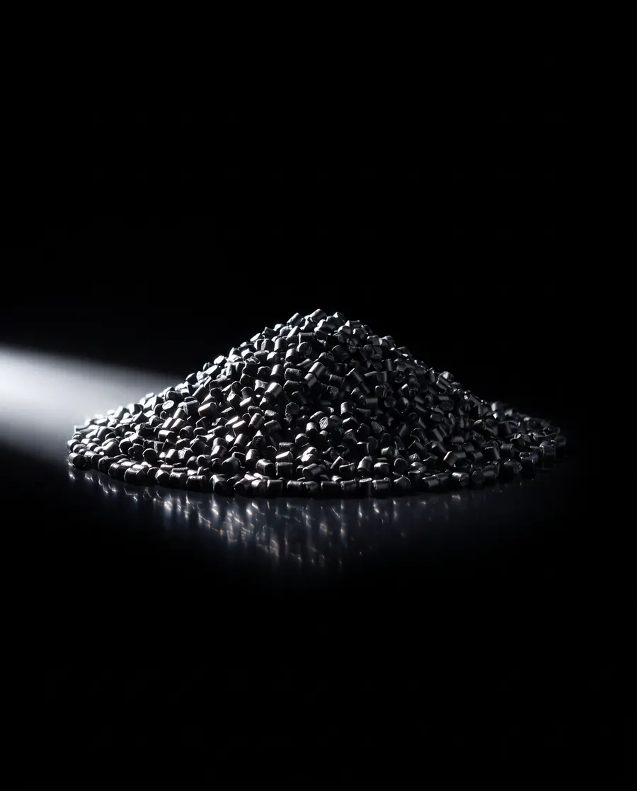

01/What we take
What we take.
Wheelie bins, car bumper bars and plastic pallets. Kept apart by polymer from the moment we collect them.
Scroll01 Three streams
Three items. One base polymer each.
01 Side by side
The three, compared.
| Attribute | Wheelie bins | Car bumper bars | Plastic pallets |
|---|---|---|---|
| Polymer | HDPEInjection-moulded and UV-stabilised. | PPMostly talc-filled PP/EPDM. Some older bumpers are PU or PC blends. | HDPEPPDepends on the maker. Each load is sorted by polymer. |
| Resin code | Resin code 2 | Resin code 5 | Resin code 2 or 5 |
| Who it’s from | Councils, through bin replacement programs · Bin makers · Waste contractors | Smash repairers · Auto wreckers and dismantlers · Insurers’ salvage | Pallet-pool and logistics operators · Food and beverage · Manufacturers · Warehouses |
| Comes off on our line | Steel axles · Wheels (rubber or PP) · Food and waste residue | Paint · Steel brackets and clips · Parking sensors · Foam energy absorbers (EPP) · Labels | Steel reinforcing rods (in some pallets) · RFID tags · Labels |
| Becomes | New bins · Pipe · Pallets · Crates | Automotive and industrial mouldings · Crates · Pallets | New pallets · Crates · Construction products |
01 What they become
As collected.
As recovered.



Illustrative images. Pallets can leave as flake or pellet; pellets shown.
01 What we don’t take
Some things we can’t accept.
- Asbestos
- Prescribed waste
- Hazardous chemicals
- Firearms or explosives
Not sure about a load? Call 0460 555 222 before you send it.
01 Talk to us